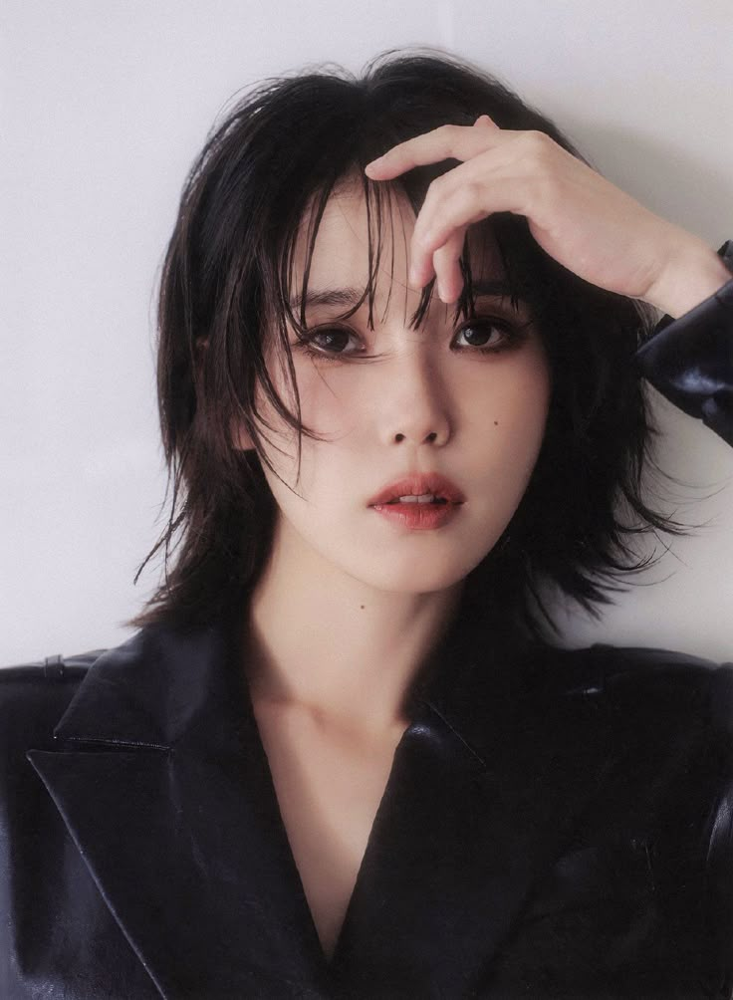
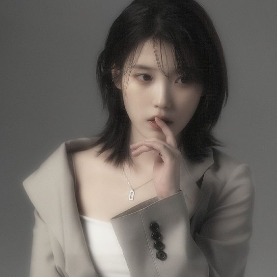
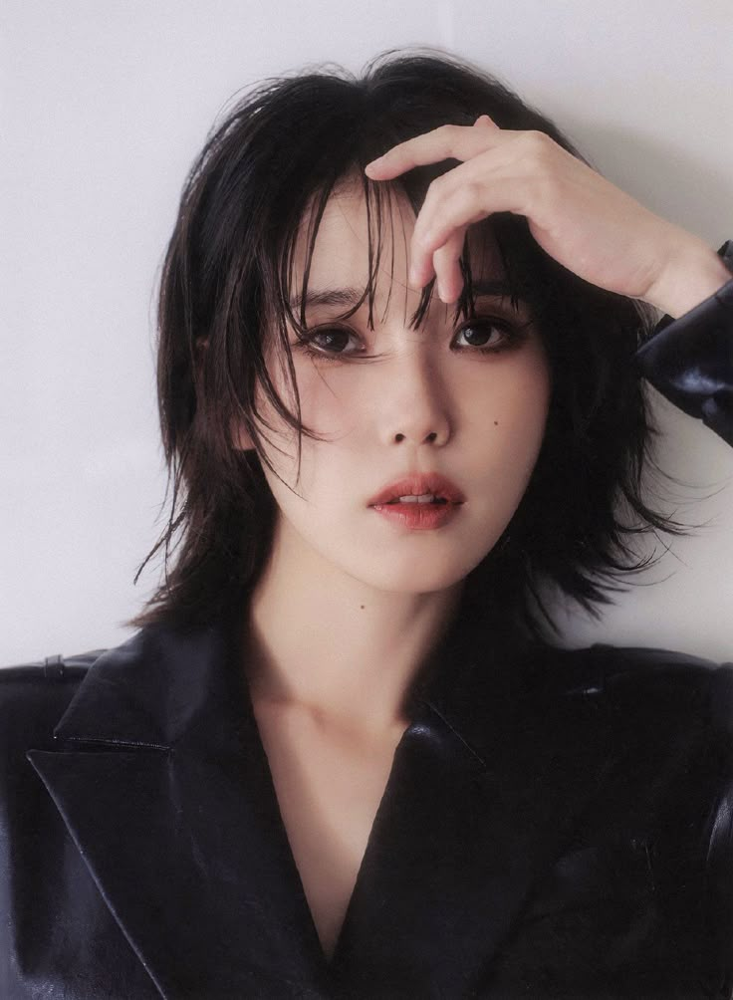
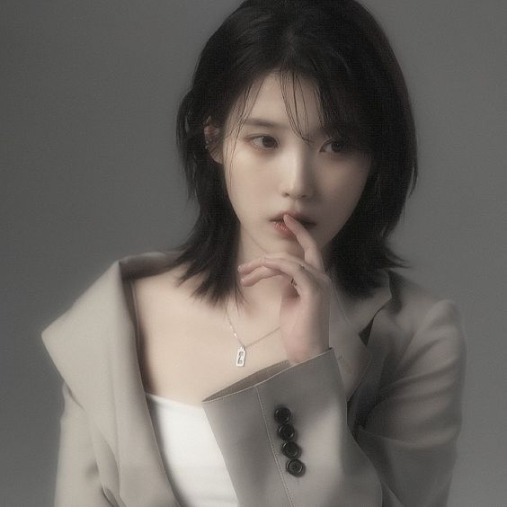

Lee Ji-eun (IU)
 




About
ditulis oleh Trychiasagita. pada 1 Januari 2020.
Lee Ji-eun (IU) adalah penyanyi, penulis lagu, dan aktris asal korea Selatan yang lahir pada 16 Mei 1993 di Seoul. Ia dikenal dengan nama panggung IU, yang berasal dari kata frasa "I and You", bermakna "aku dan kammu menjadi satu melalui musik."
IU memulai debutnya pada tahun 2008 dengan lagu Lost Child, namun baru dikenal luas setelah merilis lagu "Good Day" pada tahun 2010. Sejak itu, IU terus menjadi salah satu solois paling sukses di Korea Selatan berkat suara khas, lirik yang menyentuh, dan kemampuan menulis lagu yang luar biasa.
Selain sebagai penyanyi, IU juga sukses di dunia akting. ia membintangi berbagai drama populer
Penghargaan Musik
Penghargaan Akting
Discography

- Album LILAC Rilis: 25 Maret 2021
- Single LOVE WINS ALL Rilis: Januari 2024
- Album LOVE POEM Rilis: 18 November 2019
menggambarkan perpisahan yang indah-IU mengucapkan selamat tinggal kepada usia 20-an dengan senyum,bukan air mata. Lagu ini sebagai ucapan terima kasih pada kenangan masa muda yang indah. "Bukan perpisahan yang sedih, tapi perpisahan yang penuh rasa syukur."
Lagu ini bercerita tentang cinta yang tetap bertahan di tengah kehancuran dunia. IU menyampaikan bahwa pada akhirnya, cinta adalah hal paling kuat-cita mengalahkan segalanya. "Tidak peduli seberapa sulit keadaan cinta selalu menang."
Album ini mengambarkan perasaan hangat, kehilangan, dan harapan, seperti sebuah puisi cinta yang ditulis untuk orang-orang yang terluka atau merasa sendirian. IU ingin menghibur pendengarnya dengan lirik yang penuh empati dan kasih. "Untuk siapapun yang membutuhkan dukungan dan kehangatan."